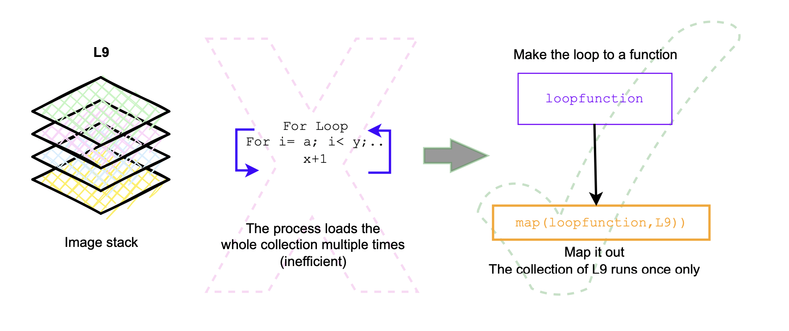
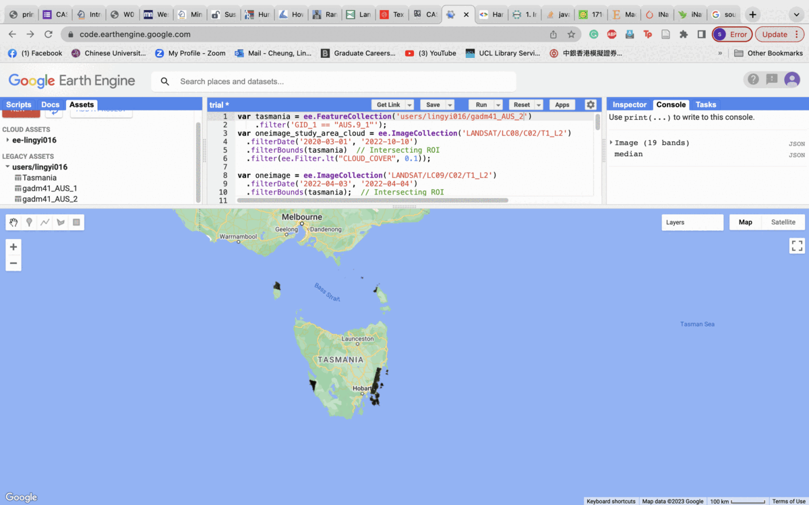
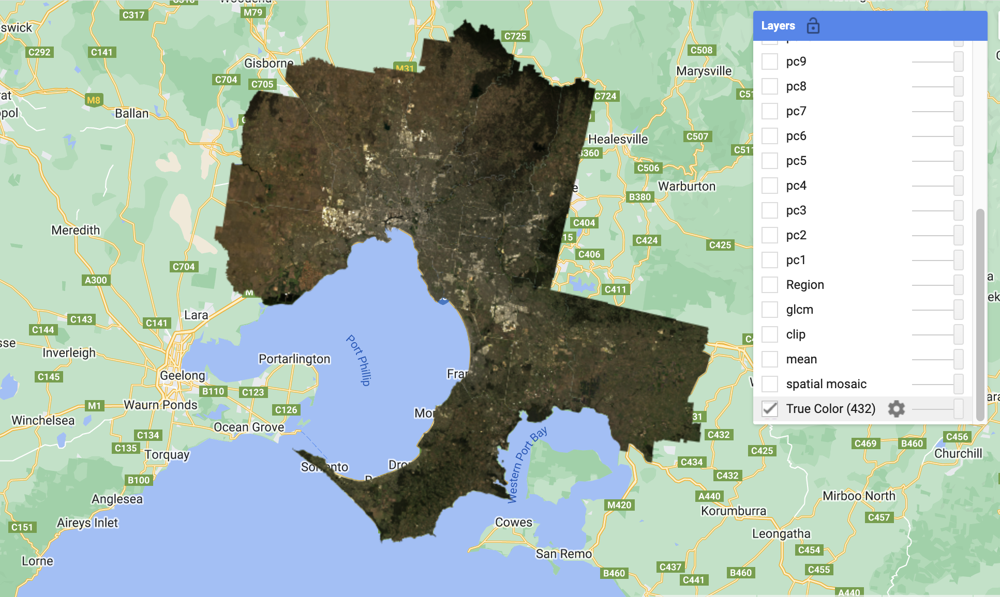
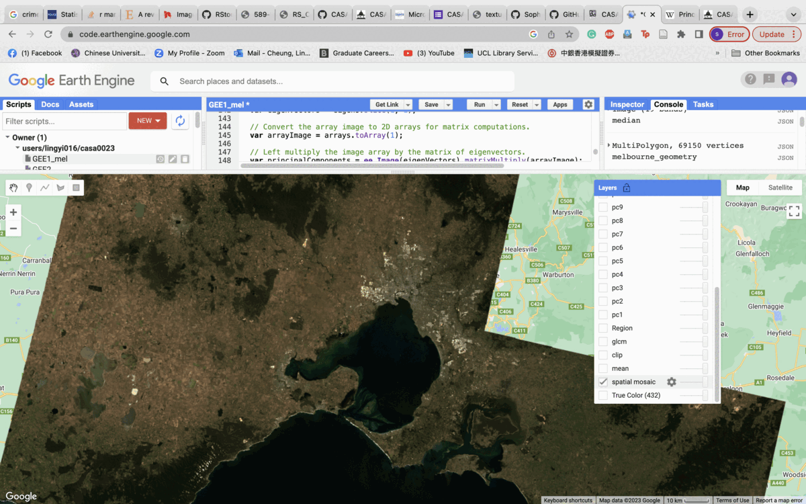
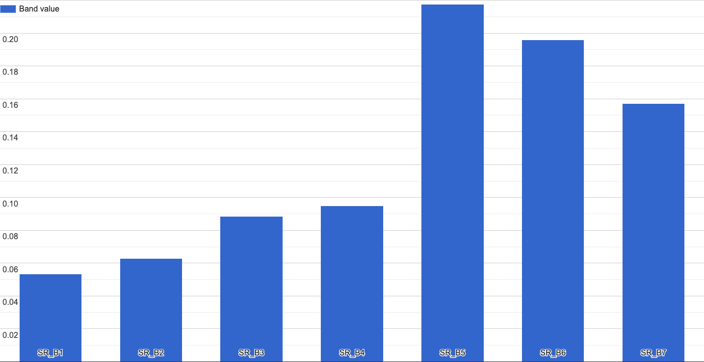

5.1 Summary of Lecture 5
5.1.1 Basics of Google Earth Engine (GEE)
Google Earth Engine (GEE) is a cloud-based geospatial processing platform that uses Javascript. It was introduced in 2010 by Google, allow users to conduct geospatial analysis at scale, which includes access to a large warehouse of satellite imagery and the prompt computational power needed to analyze those images. Below shows a comprehensive navigation guide to different tabs of the GEE layout.
Codes that run on the browser is called the Client Side, while codes that run on the server where data is stored is called Server Side. I think it is very useful to get to know more about the Java script style, including the data types, Earth Engine Objects (ee.object), and functional programming like For loop on the official Google Earth Engine Guide. During the lecture, it was specially mentioned that a loop is not possible to execute over the contents of an ee. ImageCollection because it is on the server side. Instead, a better option would be using the map() throughcreating a function that can be independently applied to each element. The figure below illustrates a simplified example of how map() would be better than for-loops in. GEE.

5.2 Application
5.2.1 Melbourne in GEE
I used Melbourne for this practical. I downloaded the GADM boundary for Australia from GADM. The original intention was to select Tasmania, however, the available imagery for the location is very limited, I adjusted several filters including the date and cloud cover to include larger range of imagery in the area:
{< .filterDate(‘2017-01-01’, ‘2022-10-10’)>} {< .filter(ee.Filter.lt(“CLOUD_COVER”, 0.5));}

However, the imagery shown are not sufficient, the screenshot below shows the coverage for Tasmania was not complete. Hence, I have selected other locations with more complete coverage of imagery. I found Melbourne with fulle coverage image, hence I chose it as the city for exploration in GEE. The figure below shows the True Colour Image that is clipped to SA boundary.

I have mosaiced the image collection, and with the overlapping pixels, I took the mean to create less obvious demarcation of image overlap. Then, I clip it back with Melbourne boundary.

5.2.2 Texture analysis of Melbourne
GEE has several methods to estimate spatial texture, image.entropy() can be used when the image is discrete valued to compute the entropy in a neighbourhood. Other than that, another method is a familiar method with gray-level co-occurrence matrix (GLCM). glcmTexture() however works with integer value, hence, the value in surface refectance will be converted to integers, which is 1 and 0 in this case, as shown in the histogram below. The range is too subtly small. therefore, it has to be multiplied so the texture can be computed with the following codes.
var glcm = clip.select(['SR_B1', 'SR_B2', 'SR_B3', 'SR_B4', 'SR_B5', 'SR_B6', 'SR_B7])
.multiply(1000)
.toUint16()
.glcmTexture({size: 1})
.select('SR_.._contrast|SR_.._diss')
.addBands(clip);
The GLCM considers spatial relationships of pixels in an image, I used the statistics of contrast GLCM for Melbourne, measuring the local variations in the gray-level co-occurrence matrix.
GCI (Landsat 8) = (B5 / B3) -1